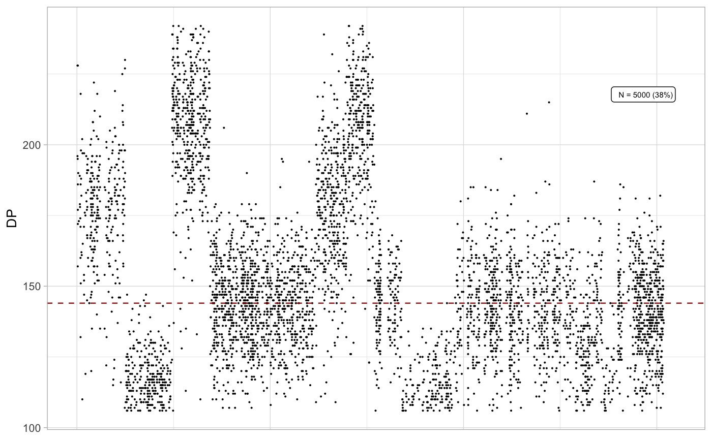
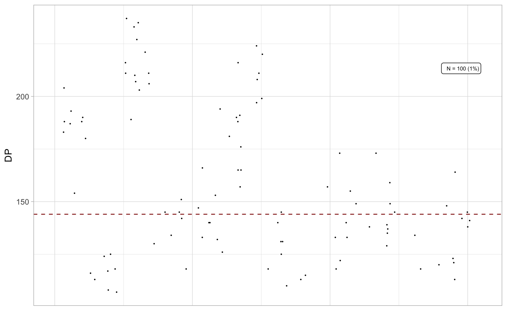
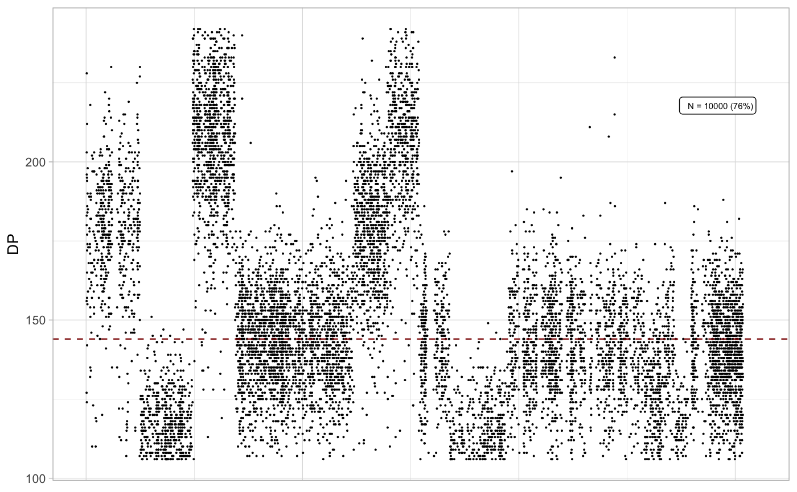

@description Plot a genome-wide scatter plot of mutation depths, downsampled if required (annotates the used proportion).
plot_depth(x, N = 5000, chromosomes = paste0("chr", c(1:22, "X", "Y")))
Arguments
| x | An object of class |
|---|---|
| N | Mutations to use, randomly sampled. |
| chromosomes | The chromosome to use for this plot. |
Value
A ggplot object.
Examples
data('example_dataset_CNAqc', package = 'CNAqc') x = init(example_dataset_CNAqc$snvs, example_dataset_CNAqc$cna,example_dataset_CNAqc$purity)#> [ CNAqc - CNA Quality Check ] #>#> Warning: [CNAqc] Enforcing numeric for values: 1027104, 2248588, 2461999, 2727935, 2763397, 2768208, ...#>#> Warning: [CNAqc] Enforcing numeric for values: 3, 3, 3, NA, NA, 3, ...#> Warning: NAs introduced by coercion#> Warning: [CNAqc] Enforcing numeric for values: 2, 2, 2, NA, NA, 2, ...#> Warning: NAs introduced by coercion#> #> Input n = 13141 mutations for 482 CNA segments (482 clonal, 0 subclonal) #> #> Mapping mutations to clonal CNA. #> #> Mapping. n = 13050 mutations mapped to segments (~99% of input) #> [CNAqc] The following segments have Major/ minor alleles in non-numeric format or NAs #> # A tibble: 215 x 20 #> chr from to length covRatio TCN SV.Type c1Mean c2Mean dhEst dhSNPs #> <chr> <int> <int> <int> <dbl> <dbl> <fct> <dbl> <dbl> <dbl> <dbl> #> 1 chr1 9.80e6 9.87e6 75009 1.26 5.38 NA NA NA NA NA #> 2 chr1 9.87e6 1.05e7 604933 1.24 5.29 NA NA NA NA 0.228 #> 3 chr1 1.78e7 1.78e7 59936 1.26 5.38 NA NA NA NA 0.158 #> 4 chr1 3.09e7 3.09e7 14969 1.24 5.29 NA NA NA NA 0.229 #> 5 chr1 3.14e7 3.16e7 179994 1.24 5.29 NA NA NA NA 0.102 #> 6 chr1 3.45e7 3.45e7 20049 1.26 5.38 NA NA NA NA NA #> 7 chr1 5.04e7 5.04e7 44976 1.24 5.29 NA NA NA NA 0.216 #> 8 chr1 5.19e7 5.19e7 24947 1.27 5.43 NA NA NA NA NA #> 9 chr1 6.13e7 6.13e7 39974 1.24 5.29 NA NA NA NA 0.233 #> 10 chr1 6.84e7 6.84e7 20002 1.24 5.29 NA NA NA NA 0.235 #> # … with 205 more rows, and 9 more variables: Major <dbl>, minor <dbl>, #> # CNA.type <fct>, NbrOfHetsSNPs <int>, minStart <int>, maxStart <int>, #> # minStop <int>, maxStop <int>, CCF <dbl> #> These CNA segments will be removed. #>plot_depth(x)plot_depth(x, N = 100)plot_depth(x, N = 1000)plot_depth(x, N = 10000)